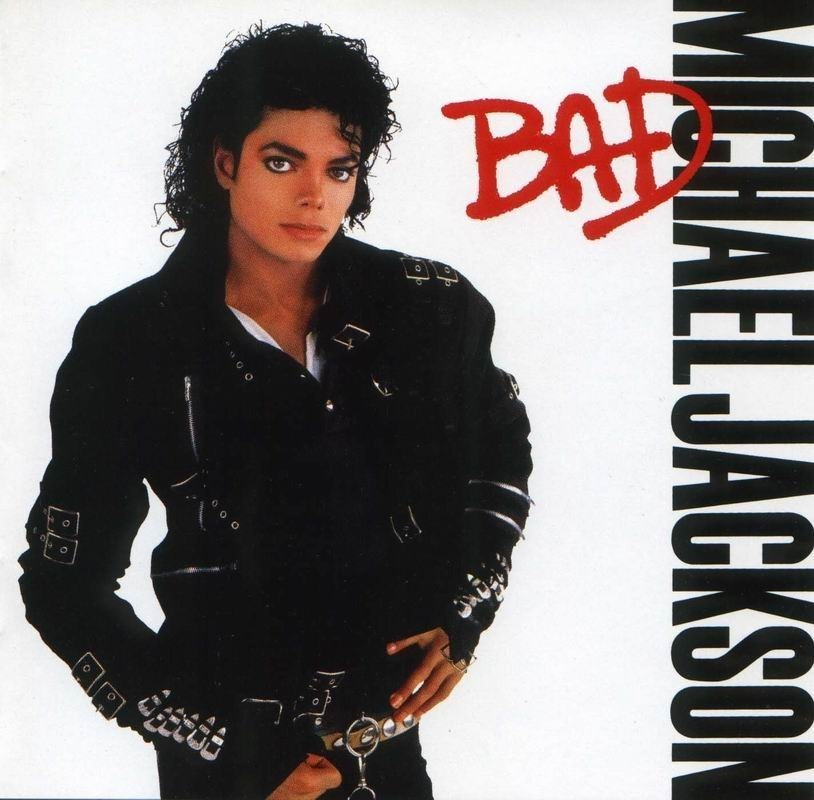

Michael Jackson is a man. Agreed, he is a young man, emotional age about thirteen, with a young man's interest in cars, girls, scary movies and gossip. But adolescent stardom, Jehovah's Witnesses wackiness and unadulterated genius have kept this faux-porcelain elephant man more childlike than any oxygen-tank sleeping device ever could.
"Bad is the work of a gifted singer-songwriter with his own skewed aesthetic agenda and the technical prowess to pursue it. Let the paid Encinologists comb through the small print for clues to understanding Jackson's complicated world. Does "God, I need you" in the carnal duet "I Just Can't Stop Loving You" constitute blasphemy in the wake of his departure from the Witnesses? Is the liner note to "Mother & Joseph Jackson" a tea leaf of familial discord or a casual term of address? Does anyone really care?
1. Bad- The title track and intro kicks off the album nicely, though perhaps not as likable as Wanna Be Startin Something on Thriller. The beat is very catchy and follows a 'how now brown cow' rthym. Some may find the chorus of 'I'm Bad' slightly laughable as Jackson attempting to state his masculinity was never going to be taken seriously. Interestingly the song was originally conceived as a duet with Prince, however Prince said he felt the song would be a hit without him and he was right- it was one of the albums 5 number 1s (another record). Overall theres not much wrong with this song (though I can understand some don't love the chorus)- 5/5"
